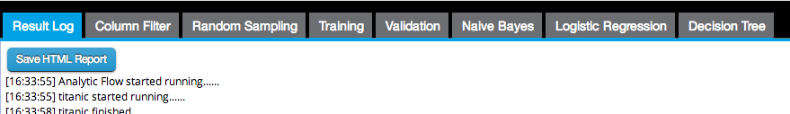

After running a flow, the results are displayed in a new tab/window. In the Result Log tab, click the Save HTML Report button to export the results as an HTML file. All of the results will be provided for download in a .zip archive.
